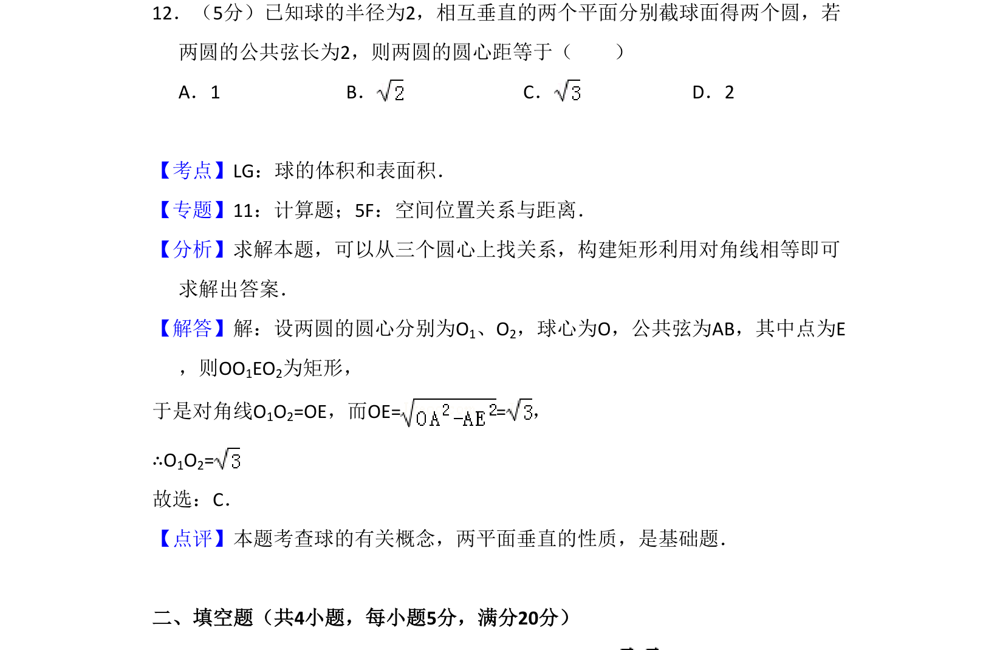
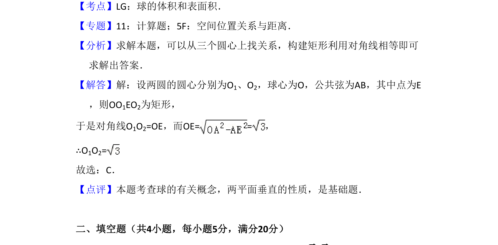

考点：球截面圆性质 空间位置关系 勾股定理

两个垂直平面截球所得圆，已知公共弦长，求两圆圆心距。

📄 原 PDF 第 8 页：
素材/真题/吉林/2008-2024·（吉林）数学高考真题/2008年高考数学试卷（理）（全国卷Ⅱ）（解析卷）.pdf
12．（5分）已知球的半径为2，相互垂直的两个平面分别截球面得两个圆，若 两圆的公共弦长为2，则两圆的圆心距等于（ ） A．1 B．C．D．2
【考点】LG：球的体积和表面积．菁优网版权所有 【专题】11：计算题；5F：空间位置关系与距离． 【分析】求解本题，可以从三个圆心上找关系，构建矩形利用对角线相等即可 求解出答案． 【解答】解：设两圆的圆心分别为O1、O2，球心为O，公共弦为AB，其中点为E ，则OO1EO2为矩形， 于是对角线O1O2=OE，而OE= =， ∴O1O2= 故选：C． 【点评】本题考查球的有关概念，两平面垂直的性质，是基础题． 二、填空题（共4小题，每小题5分，满分20分）